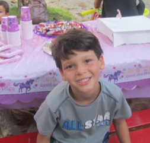
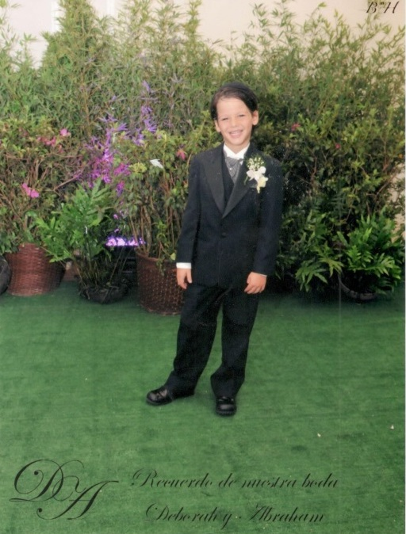

Mi segundo hermano nació el 28 de octubre del año 2006. Un sábado a las 11:30 de la noche. Yo tenía 3 años y 3 meses de edad. Tercer hijo y primer varón de mis padres.
El siguiente domingo 5 de noviembre se le realizó el brit, en la sala de fiestas pequeña de la Unión israelita de Caracas. Lo nombraron Arie Tzvi en honor a sus dos abuelos, y el orden de los nombres se debe a que a mi mamá no le gustaba el nombre Tzvi, así que le pareció que Arie era más apropiado.
Arie fue el único de nosotros (los hermanos Levy Cohen) que se alimentó de leche materna por un periodo de 5 meses. Mi mamá cree que fue porque con él tuvo ayuda (también el único que fue cuidado por una enfermera). Por esa razón mi mamá no recuerda mucho de los primeros 5 meses de mi hermano. Después que la enfermera dejó de trabajar, si estuvo mucho con él. De hecho a Arie le duró bastante el reinado de ser el menor, pues no fue sino hasta que cumplió 3 años y medios que nació Analy.
Mi mamá cuenta que disfrutaba mucho de la compañía de Arie mientras que Vivi y yo estábamos en Tip Tipot. Pero un día entró al liceo (ni siquiera sabe por qué) y el director de Materias Judaicas de ese momento, el Rabino Eli Bittan, la agarró y dijo que necesitan urgente de sus servicios como Morá. Mi mamá que siempre ha sentido un fuerte compromiso con la comunidad, no podía decir que no, pero ella dice que no le salía decir el sí, porque todo el tiempo veía la cara de Arie y se preguntaba cómo sería capaz de dejarlo solito en las mañanas. Pero bueno al final aceptó y por esa razón inscribió a mi hermano a los 15 meses en Tip Tipot.
Ella no pudo estar con él en el proceso de adaptación, solo lo dejaba con la maestra y él no paraba de llorar, la maestra le decía que tardaba en calmarse. Pobre no estaba listo para separarse de mi mamá.
Desde pequeño a Arie le ha gustado el fútbol, tanto que a la edad de 4 años comenzó a recibir clases de esta disciplina en el club Hebraica. Su posición siempre ha sido de defensa y también se ha desempeñado como arquero. Es muy bueno, es flaquito pero fuerte.
Arie ha sido un niño relativamente fácil, no pide mucho, de hecho mi mamá siempre le pregunta que quiere para su cumpleaños y él normalmente responde que quiere un día especial con mi mamá y papá, y en algunos cumpleaños nos deja formar parte de su día especial.
En mi casa lo llaman el “Meshnun” (malgeniado en jaquetía) La verdad que sí es un poco quejón y malhumorado, pero no molesta tanto.
Mi hermano cursó preescolar en Moral y Luces Herzl Bialik y en primer grado lo cambian junto con sus hermanas al colegio Sinai, donde ha cursado los siguientes años. Hoy con 11 años cursa 6to grado en esa institución educativa.
De todos los hijos de mis padres, Arie es el que más lleva internalizado la religión; usa diariamente kipá (él dice que se siente desnudo sin ella), siempre dice las berajot antes de ingerir cualquier alimento, está siempre pendiente que mi mamá vista con recato y no se quedó tranquilo hasta que mi mamá no se tapó el cabello. No sé cómo explicarlo pero se ve que él estudia en un colegio diferente al del resto de las hermanas.
Eso sí es el peor echador de chistes que existe, cuando termina de contarlo inmediatamente te lo explica, quitándole toda la gracia al chiste. Ah y no aconsejo sentarse al lado de él al ver una película que él ya haya visto, pues te la contará de principio a fin.
Ese es mi hermano Arie Tzvi; Guapo, espiritual y deportista.
